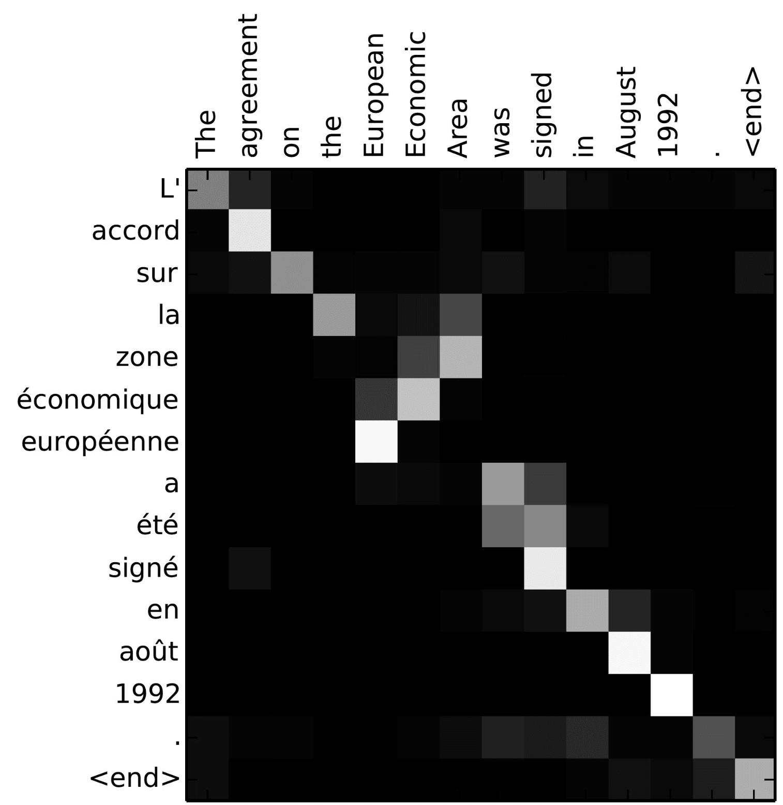
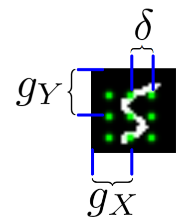

it might refer to a subject mentioned previously in the sentence, so the network may attend somewhere in the past to form its translation.
Pseudo-gradients for hard attention
April 21, 2020 · Link to repo
Soft attention is the more common route for attention because it can be trained using gradient descent, rather than slower and more fragile methods like policy gradients. What if we could produce useful gradients from a hard attention mechanism, so it can be trained using SGD?
Soft and hard attention
Attention in general is the ability for a network or model to select what it wants to process. This is really important in making models more interpretable, and has empirically shown to be extremely effective in improving model performance. In translation tasks, for example, it may be useful for the model to attend to different parts of the sentence for different words. The token

A classic example of attention for translation. The attention mostly corresponds word-for-word, except for the phrase "European Economic Area". In French, the phrase is written as "zone économique européene"--the words are backward. The alignment mechanism focuses its attention in the opposite order when generating the those three French words.
There are two types of attention, hard and soft. Hard is the easiest to explain, it simply chooses specific parts of the input to read and completely ignores the others. In an image setting, this might be something like cropping the image so you can focus on a smaller part of it. The rest of the image is essentially discarded. The important thing to note is that hard attention is usually on-off, all-or-nothing. This type of activation function is not differentiable, because it resembles a step function--where the gradient is zero for all \(x\) except for \(x = 0\), where the gradient is undefined. Intuitively, this is like saying we don't know what the cropped image would look like if we adjusted the attention location by a small amount. Since images have discrete pixels, it doesn't make sense to ask what the image would look like if we moved our crop to the left by \(\delta x \ll 1\). Because of this non-differentiability, hard-attention mechanisms have to be trained using RL methods like REINFORCE. The paper Recurrent Models of Visual Attention [Minh et al.,2015] is a landmark example in this type of RL training.
Soft attention is when all parts of the input are processed, but different parts may be weighted less than others. A common soft attention mechanism is key-query matching, in which a network generates a series of key vectors that could represent tokens in a sentence, or vectors in some memory matrix, as well as a query vector. This query vector is compared to all the key vectors using some kind of similarity metric, like cosine similarity, these similarities are used to generate an attention vector that can be elementwise multiplied to all the tokens or memory matrix vectors. [add demo?]
In the image setting soft attention can be achieved in multiple ways. One particularly cool method is gaussian filters, used in the paper Deep Recurrent Attentive Writer [Gregor et al.,2014]. Gaussian filters allows the network to actually reduce the dimensionality of its input.

The DRAW model uses gaussian filters, which are centered around the green dots. Each green dot represents a pixel of the resulting image (in this case, the output will be a 3 x 3 patch of the larger image). You can imagine a 2-d gaussian with a variance parameterized by the neural network output centered around each of the dots. This 2-d gaussian represents the weight of each pixel, which you can dot product with the image to get the intensity of the corresponding output pixel.
Again the important takeaway is that because soft attention actually does process the entire image and involves purely differentiable functions, the whole attention operation is differentiable. This means it can be trained fairly easily with backpropagation. This is especially important for early learning, because soft attention mechanisms attend to the entire input, they receive a useful gradient signal no matter where it is. This may not be the case for hard attention mechanisms unless it happens to get lucky and attend to a salient patch of information.
So far it seems like soft attention is the clear winner because of its ability to be trained with backpropagation. However, hard attention still has multiple desirable properties, like increased efficiency and ease of implementation. One can imagine it would be easier it would be to implement cropping rather than generating filter banks for gaussian filters. In addition, since cropping is a very inexpensive operation, it would likely also save some compute for large images. As a result, hard attention still has some desirable properties.
The point of this project was basically to see if I could produce some learning signal for pure hard attention that could be SGD trainable. I say "pure" because Spatial Transformer Networks [Jaderberg.,2010] do something similar with subgradients of the linear interpolation function, because their sampling function actually does interpolate between adjacent pixels. My hard attention mechanism deals purely with integer crops. I also use subgradients of an interpolation function, but since that interpolation function doesn't actually exist I'm calling these "psuedo-gradients". However since Spatial Transformer Networks do actually lay much of the groundwork for this, I'd call this less of a project and more of a tutorial.
So far it seems like soft attention is the clear winner because of its ability to be trained with backpropagation. However, hard attention still has multiple desirable properties, like increased efficiency and ease of implementation. One can imagine it would be easier it would be to implement cropping rather than generating filter banks for gaussian filters. In addition, since cropping is a very inexpensive operation, it would likely also save some compute for large images. As a result, hard attention still has some desirable properties.
The point of this project was basically to see if I could produce some learning signal for pure hard attention that could be SGD trainable. I say "pure" because Spatial Transformer Networks [Jaderberg.,2010] do something similar with subgradients of the linear interpolation function, because their sampling function actually does interpolate between adjacent pixels. My hard attention mechanism deals purely with integer crops. I also use subgradients of an interpolation function, but since that interpolation function doesn't actually exist I'm calling these "psuedo-gradients". However since Spatial Transformer Networks do actually lay much of the groundwork for this, I'd call this less of a project and more of a tutorial.
Gradient Mechanism
Given some square crop \(I\) of an image you can also produce a crop one pixel up, down, left and right, which are called \(I^{up}, I^{down}, I^{left}, I^{right}\) respectively. For now let's just pretend we're dealing with a 1-D image, so only \(I^{left}\) and \(I^{right}\) will be considered. For a particular pixel of \(I\) we assume it interpolates linearly between its adjacent pixels. This ends up looking like a leaky RELU function, where the slopes represent whether the adjacent pixels are brighter or dimmer than the center pixel. The derivative of this leaky ReLU like function is the subderivative
\(z_{t + 1} = z_{t}^2 + c\)
into
\(z_{t + 1} = f_{nn}(z_{t}, c)\)
where \(f_{nn}\) is a neural network. The neural network I use in the code has two hidden layers each with 10 hidden nodes. The network has two inputs, one for \(z_t\) and one for \(c\). The output of the network is \(z_{t + 1}\). The weights of the network are also complex numbers, with both the real and imaginary components of the weights initialized with a gaussian distribution. The threshold I used was \(0.8\), and I evaluated the neural network for 30 iterations. On my first attempt, I got the photo on the right:

Way cooler than I expected
Way cooler than I expected. I then changed the program slightly so that instead of coloring a pixel black or white based on whether or not its value is greater than the threshold, it's colored based on how many iterations it took to exceed the threshold. This gets us an image that less grainy and shows how quickly a point grows unbounded:
The fractal looks different because network weights were initialized at random. I later started recording the seeds (unfortunately I was pretty disorganized while making this, and I don't really know if the seeds correspond to their original images :/ )
The fractal looks different because network weights were initialized at random. I later started recording the seeds (unfortunately I was pretty disorganized while making this, and I don't really know if the seeds correspond to their original images :/ )

Smoothed version
Specifics
I created three variables: \(c, z, \) and a heatmap which I'll call \(h\). \(c\) and \(z\) represent the variables of the recursive function mentioned before. The heatmap is the fractal image and is what is actually plotted. \(c, z, h\) are parameterized by 5 values, which are \(x_{min}, x_{max}, y_{min}, y_{max}, s\). The first four define the lower and upper bounds of the complex plane we'll plot, and \(s\) represents the step, or resolution.
Next I define my model using a set of weights and non-linearities. The weights are initialized by sampling small numbers from a zero-mean gaussian distribution for both the real and imaginary component. I created a number of models that produced interesting results, so I'll just show one of them here:
Since neural networks are basically just matrix multiplication, I don't have to loop through each of the values of \(c\) and \(z\) and compute the recursive function, I can do it all at once! Right now both \(c\) and \(z\) are flattened arrays of some length \(L\). I add an extra dimension to both of them, making them shape \(L \times 1\), then concatenate along the new axis to produce an array of shape \(L \times 2\). Feeding this into the model produces an output of shape \(L \times 1\). To convert this output back into a fully flattened array we just do some simple array slicing. Once the new \(z\) array is calculated, I check whether each value of the array is greater than the threshold 0.8. This whole process is done in a for loop 30 times.
At the end \(h\) is a heatmap showing which points went above the threshold the fastest. This can be directly plotted using matplotlib, or any other plotting library.
import numpy as np
x = np.arange(x_min, x_max, s)
y = np.arange(x_min, x_max, s)
gx, gy = np.meshgrid(x, y)
c = (gx * 1j + gy).flatten()
z = np.zeros(len(c))
h = np.zeros_like(z)
weight1 = 0.2 * randn(2, 10) * 1j + 0.2 * randn(2, 10)
weight2 = 0.35 * randn(10, 10) * 1j + 0.35 * randn(10, 10)
weight3 = 0.45 * randn(10, 1) * 1j + 0.45 * randn(10, 1)
def model(inp):
fc1 = (inp @ weight1) ** np.sqrt(2)
fc2 = np.tan((fc1 @ weight2))
fc3 = fc2 @ weight3
return fc3
for iteration in range (30):
c_ = np.expand_dims(c, -1)
z_ = np.expand_dims(z, -1)
inp = np.concatenate([c_, z_], axis = -1)
# compute z{t + 1}
z = model(inp)[:, 0]
h += np.absolute(z) > 0.8
import matplotlib.pyplot as plt
plt.imshow(h)
plt.show()
Gallery
Feel free to do whatever you want with these. You can view full resolution images at the github repo